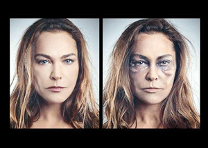

|
|
کارزار «هشت زن - هشت زندگی» در ترکیه علیه خشونت نسبت به زنان
سه شنبه22 اسفند 1391

شهرزادنیوز:کارزار «هشت زن- هشت زندگی» کارزاری است که از سوی مقامات ترکیه با شرکت هنرپیشگان مشهور زن، علیه خشونت نسبت به زنان به مناسبت 8 مارس به راه افتاده تا با چاپ تصاویر بزرگ هنرپیشه ها با چهره ی گریم شده، زنان خشونت دیده را در مرکز توجه جامعه قرار دهد و افکار عمومی را علیه این جنایات بر انگیزد.
به گزارش «تاگز اشپیگل» آلمان، این سری عکسها با تیتر «من میتوانستم جای او باشم»، این روزها در تمام روزنامه های ترکیه منتشر شده است. هر یک از این هنرپیشگان مشهور، نمایشگر سرنوشت زنی به قتل رسیده است. از جمله ملتم جومبول، هنرپیشه محبوب ترکیه، با چهره اش یاد آور جیلان سوُیسال، دختر 21 ساله ای است که دو سال پیش در «آدانا» قربانی قتل به اصطلاح ناموسی شد.
هولیا اَوسار، سوپر استار ترکیه، سرنوشت تکان دهنده آیشه پاشالی را نشان می دهد که از خشونت شوهرش به دادگاه پناه برد و خواستار طلاق شد. دادگاه خواست او را رد کرد و همسرش او را به خاطر تقاضای طلاق در مقابل چشم همگان با ضربات چاقو به قتل رساند.
با وجود این کارزار، خیرالدین بولان، مبارز حقوق زنان، دولت را مورد انتقاد قرار میدهد که گامی اساسی در این راه برنداشته و هنوز هم مرتکبان خشونت به مجازات درخور جنایت خود نمی رسند.
طبق آمار «پایگاه اینترنتی بیانت» که از سوی اتحادیه اروپا حمایت می شود، سال گذشته 165 زن در ترکیه توسط مردان به قتل رسیده اند.
در رابطه با کمکاری دولت برای حفاظت از زنان خشونت دیده، روزنامه ترک زبان «طرف» نوشته است که در یکی از خانههای پناه زنان با 20 تخت در استانبول، در حال حاضر 70 زن بسر می برند.